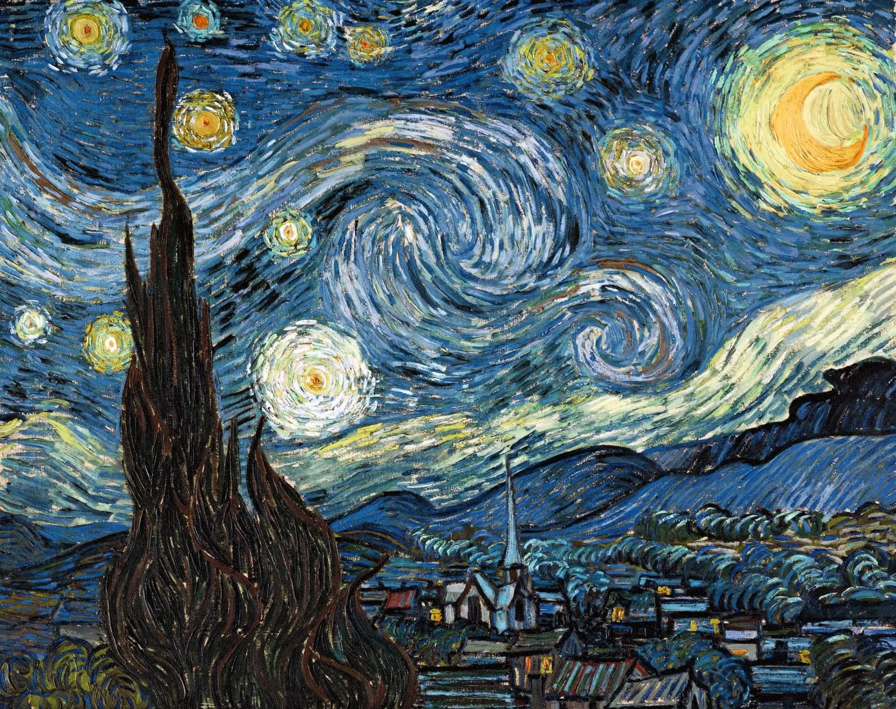

1853 — 1890 · Une vie en couleurs
Vincent van Gogh
Entrez dans le ciel intérieur d’un artiste qui cherchait la lumière jusque dans la nuit.
Choisissez une étoile pour commencer

1853 — 1890 · Une vie en couleurs
Entrez dans le ciel intérieur d’un artiste qui cherchait la lumière jusque dans la nuit.
Choisissez une étoile pour commencer
